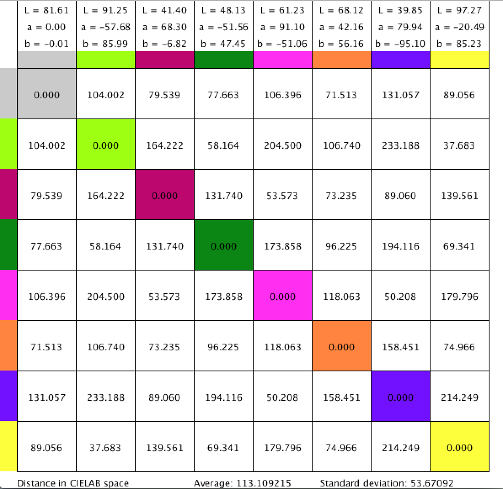
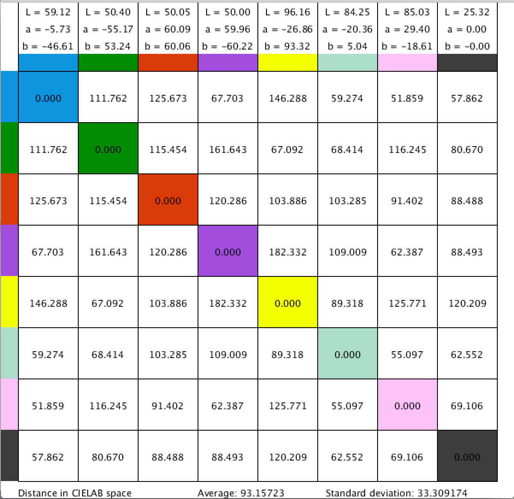

We started our color palette design using a computational approach. Given that we were trying to find 8 points in space that are as far apart from one another while still being relatively equidistant, we looked to geometry as a possible realm for a solution. We know that an isosceles triangle is a 2D shape that allows for equally spaced vertices, and a tetrahedron is the 3D equivalent. However, a triangle gives us only 3 points and a tetrahedron only 4 points. Since we are looking for an 8 point shape, a cube was an obvious choice despite not offering completely equidistant vertices. To recreate a cube in the CIELab color space we chose 2 values each for L*, a*, b*. We then iteratively took all possible combinations of these values and were left with 8 values that mapped to the RBG color space. Two slightly modified versions of this approach are seen below.
 
However, the color palette produced using our computational approach were not very aesthetically pleasing. To correct this we attempted to manually shift some of the color values around until we got something that we were happier with. This worked relatively well and we were left with the color palette seen below.
Our color palette now looked a little better and still retained a large average distance with a reasonable standard deviation. But, we still weren't completely satisfied with the aesthetics of the resulting palette and decided to pursue a purely manual approach. Using an online color picker we developed a couple designs based solely on our intuition about which colors looked nice together would still be highly distinguishable. Our resulting palettes are seen below.
We found that we were able to manually pick a palette that was both highly distinguishable and aesthetically appealing. A few more adjustments to our favorite of the above choices, and our final palette was created!